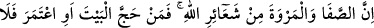
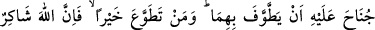
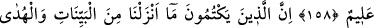
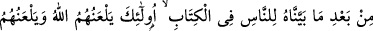
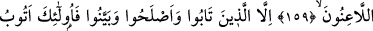
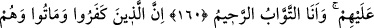
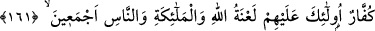
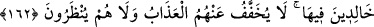
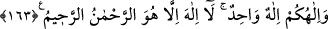

İLÂHÎ NİŞANLAR
158. Şüphe yok ki, Safâ ile Merve Allah’ın koyduğu nişanlardandır. Her kim
Beytullah’ı ziyâret eder veya umre yaparsa onları tavâf etmesinde kendisine bir
günah yoktur. Her kim gönüllü olarak bir iyilik yaparsa şüphesiz Allah kabûl eder
ve (yapılanı) hakkıyla bilir.
159. İndirdiğimiz açık delilleri ve kitapta insanlara apaçık gösterdiğimiz hidâyet
yolunu gizleyenlere hem Allah hem de bütün lânet ediciler lânet eder.
160. Ancak tevbe edip durumlarını düzeltenler ve gerçeği açıkça ortaya koyanlar
başkadır. Zira ben onların tevbelerini kabûl ederim. Ben tevbeyi çokça kabûl eden
ve çokça esirgeyenim.
161. (Âyetlerimizi) inkâr etmiş ve kâfir olarak ölmüşlere gelince, işte Allah’ın
meleklerin ve tüm insanların lâneti onların üzerinedir.
162. Onlar ebediyen lânet içinde kalırlar. Artık ne azâbları hafifletilir ne de
onların yüzlerine bakılır.
163. İlâhınız bir tek Allah’tır. O’ndan başka ilâh yoktur. O, rahmândır, rahîmdir.
“Safâ” ve “Merve”, Allah’a tâatın alâmetlerindendir. Allah Teâlâ, hac veya umre
yapılırken vakfedilen, sa’yedilen ve kurban kesilen yerleri bizim için alâmet kılmıştır.
Biz bunlara bakarak nasıl ibâdet edeceğimizi biliriz.
“Safâ”, Mekke’de bulunan bir dağın ismidir ve “Safiyyullah Âdem” (a.s.) üzerinde
oturduğu için aynı kökten safâ, safî ismini almışlardır. “Merve” de yine Mekke’de
bulunan bir dağın ismi olup Âdem (a.s.)’ın hanımı Havvâ vâlidemiz üzerinde oturduğu